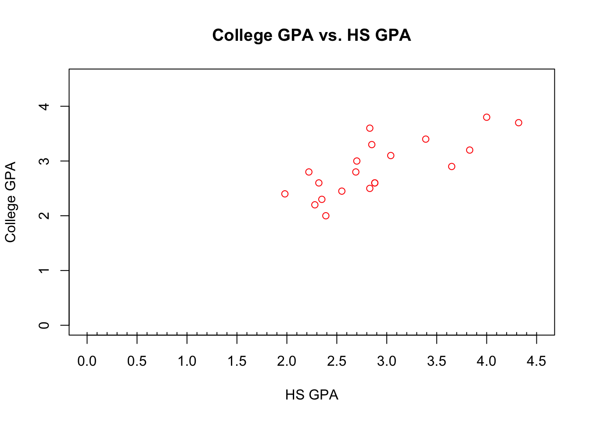

2 Introduction to R
We will go over some of the basic R operations in this chapter.
If you have questions, you should check Chris Bilder’s website for full information.
2.1 Basic Operation
2+2
#> [1] 4
2^3
#> [1] 8
# calculate the cdf of std. normal
pnorm(1.96) # 1.96 is the quantile
#> [1] 0.9750021
log(1)
#> [1] 0
sin(pi/2)
#> [1] 1
3/4
#> [1] 0.75
save <- 2+2
save
#> [1] 4
objects()
#> [1] "save"
ls()
#> [1] "save"
# quit operaiton
# q() 2.2 Vectors
x <- c(1,2,3,4,5)
x
#> [1] 1 2 3 4 5
sd(x)
#> [1] 1.581139
mysd <- function(x){
cat(" My data \n", x, "\n has std deviation",sqrt(var(x)))
}
mysd(x)
#> My data
#> 1 2 3 4 5
#> has std deviation 1.581139
pnorm(q=1.96, mean=1.96, sd=1)
#> [1] 0.5The full syntax for pnorm() is pnorm(q, mean = 0, sd = 1, lower.tail = TRUE, log.p = FALSE)
x <- c(3.68, -3.63, 0.80, 3.03, -9.86, -8.66,
-2.38, 8.94, 0.52, 1.25)
y <- c(0.55, 1.65, 0.98, -0.07, -0.01, -0.31,
-0.34, -1.38, -1.32, 0.53)
x+y
#> [1] 4.23 -1.98 1.78 2.96 -9.87 -8.97 -2.72 7.56 -0.80
#> [10] 1.78
x*y
#> [1] 2.0240 -5.9895 0.7840 -0.2121 0.0986 2.6846
#> [7] 0.8092 -12.3372 -0.6864 0.6625
mean(x)
#> [1] -0.631
x-mean(x)
#> [1] 4.311 -2.999 1.431 3.661 -9.229 -8.029 -1.749 9.571
#> [9] 1.151 1.881
x*2
#> [1] 7.36 -7.26 1.60 6.06 -19.72 -17.32 -4.76 17.88
#> [9] 1.04 2.50The element(elt)-wise operation makes our life easier.
2.3 Files
Click gpa.csv to download the GPA csv file.
Click gpa.txt to download the GPA txt file.
getwd()
#> [1] "/Users/weishangjie/Documents/GitHub/Time-Series-Analysis"
gpatxt <- read.table("gpa.txt", header=TRUE, sep="")
gpacsv <- read.csv("gpa.csv")
gpacsv$HSGPA
#> [1] 3.04 2.35 2.70 2.55 2.83 4.32 3.39 2.32 2.69 2.83 2.39
#> [12] 3.65 2.85 3.83 2.22 1.98 2.88 4.00 2.28 2.88
gpacsv$CollegeGPA
#> [1] 3.10 2.30 3.00 2.45 2.50 3.70 3.40 2.60 2.80 3.60 2.00
#> [12] 2.90 3.30 3.20 2.80 2.40 2.60 3.80 2.20 2.60
gpacsv[1,1] # [row, col]
#> [1] 3.04
gpacsv[,1]
#> [1] 3.04 2.35 2.70 2.55 2.83 4.32 3.39 2.32 2.69 2.83 2.39
#> [12] 3.65 2.85 3.83 2.22 1.98 2.88 4.00 2.28 2.88
gpacsv[c(1,3,5),2]
#> [1] 3.1 3.0 2.5
gpacsv[,"HSGPA"]
#> [1] 3.04 2.35 2.70 2.55 2.83 4.32 3.39 2.32 2.69 2.83 2.39
#> [12] 3.65 2.85 3.83 2.22 1.98 2.88 4.00 2.28 2.88
summary(gpacsv)
#> HSGPA CollegeGPA
#> Min. :1.980 Min. :2.000
#> 1st Qu.:2.380 1st Qu.:2.487
#> Median :2.830 Median :2.800
#> Mean :2.899 Mean :2.862
#> 3rd Qu.:3.127 3rd Qu.:3.225
#> Max. :4.320 Max. :3.800
plot(x = gpacsv$HSGPA, y = gpacsv$CollegeGPA,
xlab = "HS GPA", ylab = "College GPA",
main = "College GPA vs. HS GPA",
xlim = c(0,4.5), ylim = c(0,4.5), col = "red",
pch = 1, cex = 1.0, panel.first = grid(col = "gray", lty
= "dotted")) The
The plot() function creates a two dimensional plot of data.
Here are descriptions of its arguments:
x specifies what is plotted for the x-axis.
y specifies what is plotted for the y-axis.
xlab and ylab specify the x-axis and y-axis labels, respectively.
main specifies the main title of the plot.
-
xlim and ylim specify the x-axis and y-axis limits, respectively.
- Notice the use of the c() function.
-
col specifies the color of the plotting points.
pchspecifies the plotting characters.cexspecifies the height of the plotting characters. The value 1.0 is the default.panel.first = grid()specifies grid lines will be plotted.The line types can be specified as follows:
1=solid, 2=dashed, 3=dotted, 4=dotdash, 5=longdash, 6=twodashor as one of the character strings"blank", "solid", "dashed", "dotted", "dotdash", "longdash", or"twodash".
These line type specifications can be used in other functions.The
par()(parameter) function’s Help contains more information about the different plotting options!
2.4 Regression
Our model is:\[CollegeGPA=\beta_0+\beta_1HSGPA+\epsilon\]
mod.fit <- lm(formula= CollegeGPA~ HSGPA, data=gpacsv)
mod.fit
#>
#> Call:
#> lm(formula = CollegeGPA ~ HSGPA, data = gpacsv)
#>
#> Coefficients:
#> (Intercept) HSGPA
#> 1.0869 0.6125
names(mod.fit)
#> [1] "coefficients" "residuals" "effects"
#> [4] "rank" "fitted.values" "assign"
#> [7] "qr" "df.residual" "xlevels"
#> [10] "call" "terms" "model"
mod.fit$coefficients
#> (Intercept) HSGPA
#> 1.0868795 0.6124941
round(mod.fit$residuals[1:5],2)
#> 1 2 3 4 5
#> 0.15 -0.23 0.26 -0.20 -0.32
library(tidyverse)
#> ── Attaching packages ─────────────────── tidyverse 1.3.2 ──
#> ✔ ggplot2 3.4.1 ✔ purrr 1.0.1
#> ✔ tibble 3.1.8 ✔ dplyr 1.1.0
#> ✔ tidyr 1.3.0 ✔ stringr 1.5.0
#> ✔ readr 2.1.4 ✔ forcats 0.5.2
#> ── Conflicts ────────────────────── tidyverse_conflicts() ──
#> ✖ dplyr::filter() masks stats::filter()
#> ✖ dplyr::lag() masks stats::lag()
save.fit <- data.frame(gpacsv, C.GPA.hat =
round(mod.fit$fitted.values,2), residuals =
round(mod.fit$residuals,2))
save.fit %>% head()
#> HSGPA CollegeGPA C.GPA.hat residuals
#> 1 3.04 3.10 2.95 0.15
#> 2 2.35 2.30 2.53 -0.23
#> 3 2.70 3.00 2.74 0.26
#> 4 2.55 2.45 2.65 -0.20
#> 5 2.83 2.50 2.82 -0.32
#> 6 4.32 3.70 3.73 -0.03
summary(mod.fit)
#>
#> Call:
#> lm(formula = CollegeGPA ~ HSGPA, data = gpacsv)
#>
#> Residuals:
#> Min 1Q Median 3Q Max
#> -0.55074 -0.25086 0.01633 0.24242 0.77976
#>
#> Coefficients:
#> Estimate Std. Error t value Pr(>|t|)
#> (Intercept) 1.0869 0.3666 2.965 0.008299 **
#> HSGPA 0.6125 0.1237 4.953 0.000103 ***
#> ---
#> Signif. codes:
#> 0 '***' 0.001 '**' 0.01 '*' 0.05 '.' 0.1 ' ' 1
#>
#> Residual standard error: 0.3437 on 18 degrees of freedom
#> Multiple R-squared: 0.5768, Adjusted R-squared: 0.5533
#> F-statistic: 24.54 on 1 and 18 DF, p-value: 0.0001027Hence, our estimated regression model is\[ \hat{collge.GPA}=\hat{\beta_0}+\hat{\beta_1}HS.GPA =1.0869+0.6125HS.GPA\]
# Open a new graphics window
# device new
dev.new(width = 8, height = 6, pointsize = 10)
# 1 row and 2 columns of plots
par(mfrow = c(1,2))
# par= graphic parameter
# mfrow= make a frame by row
# Same scatter plot as before
plot(x = gpacsv$HSGPA, y = gpacsv$CollegeGPA, xlab = "HS
GPA", ylab = "College GPA", main = "College GPA vs.
HS GPA", xlim = c(0,4.5), ylim = c(0,4.5), col =
"red", pch = 1, cex = 1.0, panel.first = grid(col =
"gray", lty = "dotted"))
# Puts the line y = a + bx on the plot
abline(a = mod.fit$coefficients[1], b =
mod.fit$coefficients[2], lty = "solid", col =
"blue", lwd = 2)
# Same scatter plot as before
plot(x = gpacsv$HSGPA, y = gpacsv$CollegeGPA, xlab = "HS
GPA", ylab = "College GPA", main = "College GPA vs.
HS GPA", xlim = c(0,4.5), ylim = c(0,4.5), col =
"red", pch = 1, cex = 1.0, panel.first = grid(col =
"gray", lty = "dotted"))
# Add line
# expr= math expression
curve(expr = mod.fit$coefficients[1] +
mod.fit$coefficients[2]*x,
xlim = c(min(gpacsv$HSGPA),max(gpacsv$HSGPA)),
col= "blue", add = TRUE, lwd = 2)The
dev.new()function can be used to open a new plotting window.The
abline()function can be used to draw straight lines on a plot. In the format used here, the line y = a + bx was drawn where a was the (intercept) and b was the (slope).In the second plot, the curve() function was used to draw the line on the plot. This was done to have the line within the range of the high school GPA values.
Let’s use function to automate what we have done.
my.reg.func <- function(x, y, data) {
# Fit the simple linear regression model and save the results in mod.fit
mod.fit <- lm(formula = y ~ x, data = data)
#Open a new graphics window - do not need to
dev.new(width = 6, height = 6, pointsize = 10)
# Same scatter plot as before
plot(x = x, y = y, xlab = "x", ylab = "y", main = "y vs. x", panel.first=grid(col = "gray", lty =
"dotted"))
# Plot model
curve(expr = mod.fit$coefficients[1] +
mod.fit$coefficients[2]*x, xlim = c(min(x),max(x)),
col = "blue", add = TRUE)
# This is the object returned
mod.fit
}
save.it <- my.reg.func(x = gpacsv$HSGPA, y =
gpacsv$CollegeGPA, data = gpacsv)To get specific x-axis or y-axis tick marks on a plot, use the axis() function. For example,
#Note that xaxt = "n" tells R to not give any labels on the
# x-axis (yaxt = "n" works for y-axis)
plot(x = gpacsv$HSGPA, y = gpacsv$CollegeGPA, xlab = "HS GPA",
ylab = "College GPA", main = "College GPA vs. HS GPA",
xaxt = "n", xlim = c(0, 4.5), ylim = c(0, 4.5), col =
"red", pch = 1)
plot(x = gpacsv$HSGPA, y = gpacsv$CollegeGPA, xlab = "HS GPA",
ylab = "College GPA", main = "College GPA vs. HS GPA",
xaxt = "n", xlim = c(0, 4.5), ylim = c(0, 4.5), col =
"red", pch = 1)
#Major tick marks
axis(side = 1, at = seq(from = 0, to = 4.5, by = 0.5)) 
plot(x = gpacsv$HSGPA, y = gpacsv$CollegeGPA, xlab = "HS GPA",
ylab = "College GPA", main = "College GPA vs. HS GPA",
xaxt = "n", xlim = c(0, 4.5), ylim = c(0, 4.5), col =
"red", pch = 1)
#Major tick marks
axis(side = 1, at = seq(from = 0, to = 4.5, by = 0.5))
#Minor tick marks
axis(side = 1, at = seq(from = 0, to = 4.5, by = 0.1), tck
= 0.01, labels = FALSE) 
2.5 Object-Oriented Language
Functions are typically designed to operate on only one or very few classes of objects. However, some functions, like summary(), are generic, in the sense that essentially different versions of them have been constructed to work with different classes of objects.
When a generic function is run with an object, R first checks the object’s class type and then looks to find a method function with the name format <generic function>.<class name>. Below are examples for summary():
- summary(mod.fit) – The function
summary.lm()summarizes the regression model - summary(gpacsv) – The function
summary.data.frame()summarizes the data frame’s contents - summary.default() – R attempts to run this function if there is no method function for a class
There are many generic functions! For example, plot() is a generic function (tryplot(mod.fit) to see what happens!). We will also see other generic functions like predict() later in the notes.
plot(mod.fit)


The purpose of generic functions is to use a familiar language set with any object. So it is convenient to use the same language set no matter the application. This is why R is referred to as an object-oriented language.
To see a list of all method functions associated with a class, use methods(class = <class name>). For the regression example, the method functions associated with the lm class are:
methods(class="lm") %>% head()
#> [1] "add1.lm" "alias.lm"
#> [3] "anova.lm" "case.names.lm"
#> [5] "coerce,oldClass,S3-method" "confint.lm"To see a list of all method functions for a generic function, use methods(generic.function = <generic function name>)
methods(generic.function = "summary") %>% head()
#> [1] "summary,ANY-method"
#> [2] "summary,DBIObject-method"
#> [3] "summary.aov"
#> [4] "summary.aovlist"
#> [5] "summary.aspell"
#> [6] "summary.check_packages_in_dir"Knowing what a name of a particular method function can be helpful to find help on it. For example, the help for summary() alone is not very helpful! However, the help for summary.lm()provides a lot of useful information about what is summarized for a regression model.